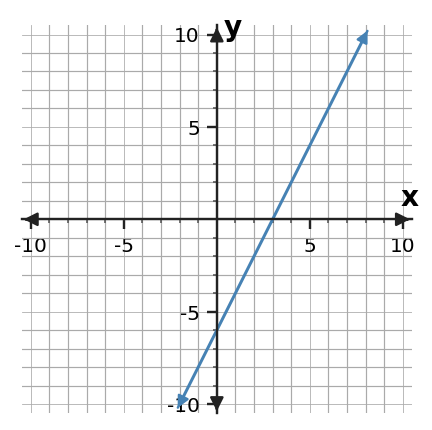

Algebra 1 · 1.4 Expressions and Structure · Check Your Understanding
Intro
1. Combine like terms: 7x - 3 + 2x + 11 - x.
Intro
2. Rewrite -4(2x - 5) using the distributive property.
Review
3. Solve -3x > 15 and explain the inequality-sign change.
Review
4. Solve x/(-4) ≤ 3 and describe the number-line direction.
Mastery
5. Plot (6, -5) and name its quadrant.
Mastery
6. Use the line shown to state the x- and y-intercepts.
